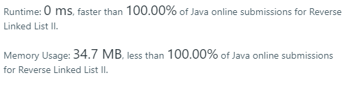
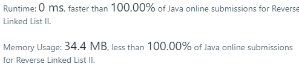

Reverse a linked list from position m to n. Do it in one-pass.
Note: 1 ≤ m ≤ n ≤ length of list.
Example:
Input: 1->2->3->4->5->NULL, m = 2, n = 4
Output: 1->4->3->2->5->NULLSolution by myself
Approach 1
1 | class Solution { |

Solution from others
Approach 1 : reverse part using stack
1 | public ListNode reverseBetween(ListNode head, int m, int n) { |
